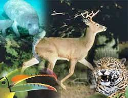
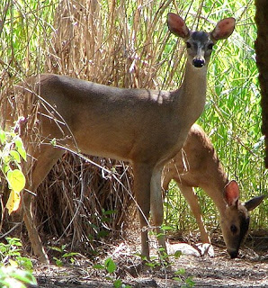
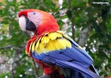
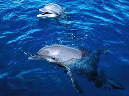
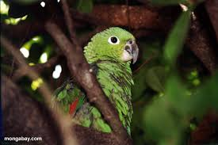

Pagina principal
Animales en Honduras
Parque Nacional la tigra
Biosfera del Rio Platano
Animales en Honduras
Definición de Fauna
La fauna es el conjunto de especies animales que habitan en una región geográfica, que son propias de un período geológico o que se pueden encontrar en un ecosistema determinado. La Zoogeografía se ocupa de la distribución espacial de los animales. Ésta depende tanto de factores abióticos (temperatura, disponibilidad de agua) como de factores bióticos.
Entre éstos sobresalen las relaciones posibles de competencia o de depredación entre las especies. Los animales suelen ser muy sensibles a las perturbaciones que alteran su hábitat; por ello, un cambio en la fauna de un ecosistema indica una alteración en uno o varios de los factores de éste.
La fauna doméstica o fauna sometida a domesticación, está constituida por las especies domésticas propiamente dichas, es decir, aquellas especies sometidas al dominio del hombre, que se habitúan a vivir bajo este dominio sin necesidad de estar encerradas o sujetas y que en este estado se reproducen indefinidamente, teniendo este dominio como objetivo la explotación de la capacidad de diversos animales de producir trabajo, carne, lana, pieles, plumas, huevos, compañía y otros productos y servicios (el caballo, el buey, la oveja, la cabra, el gato, el perro, la gallina, el cerdo, la llama).
En la fauna salvaje se encuentran muchos tipos de animales como el Jaguar.
Hablamos de diferentes tipos de fauna de acuerdo al origen geográfico de donde provienen las especies que habitan un ecosistema o biótopo.
• La fauna silvestre autóctona, nativa o indígena está formada por todos los animales que pertenecen naturalmente al ambiente que habitan.
• La fauna silvestre exótica, alóctona, foránea o introducida está formada por todos los animales silvestres que no pertenecen naturalmente al medio que habitan, sino que han sido incorporados a él por acción voluntaria o involuntaria o voluntaria del hombre. A este tipo de fauna en la actualidad se la denomina fauna contaminante.
La Fauna Original de Honduras
Diversas definiciones convergen en que el concepto de fauna está íntimamente relacionado con los tipos de vegetación, climas y ecosistemas. En el caso de la fauna hondureña, cinco grupos la representan: aves, mamíferos, reptiles, anfibios y las áreas protegidas comprendidas por parques nacionales, refugios de vida silvestre, reservas biológicas, monumentos naturales y culturales, zonas productoras de agua, así como áreas de uso múltiple, reserva indígena y de biósfera, entre otras.
El número de animales asciende en la actualidad a más de mil 283, donde 737 son aves, 231 mamíferos, 200 tipos de reptiles y 115 diferentes clases de anfibios, todos ellos presumiendo su vistosidad, movimiento y agilidad propios de cada uno. Los bosques se distinguen por ser latifoliados, húmedos, secos y manglar.
En Honduras, algunas especies animales están condicionadas por las migraciones desde el Norte y Sur América, sobrevivientes de la era cenozoica. Nos referimos al armadillo, Zarigüeya o tacuacín, el oso colmenero y algunos monos.
Sin embargo, otros géneros como los sapos, garrobos o iguanas y el guardabarranco o taragón son autóctonos del territorio. No menos importante es distinguir también a los Murciélagos, el zorrillo, la comadreja, el manatí, el conejo, codorniz, pavas, la guara roja, el tucán, venado cola blanca, éste último considerado símbolo nacional lastimosamente en extinción.
Los entornos naturales que conforman el hábitat de dichas crías se conforma por diferentes regiones ecológicas: selva lluviosa o pluvioselva, bosques nublados, mixtos y sabanas. Lo que permite gozar a los hondureños de un clima tropical, cálido en zonas como la de occidente y en otras respirar un aire caliente como la zona sur o en la costa norte.
Como incentivos al medio ambiente, muchos son los premios que se han instituido para promover la protección de las diferentes crías cuyo nicho sigue siendo la fauna hondureña. Tal es el caso del "Premio Nacional del Ambiente", que se celebra hace más de una década y es impulsado por la Secretaría de Recursos Naturales y Ambiente de Honduras.
Así como ellos, muchas instituciones, organismos y personas naturales se agrupan cada año para formar comités de prevención y sostenibilidad de los ecosistemas, logrando con acierto disminuir y controlar la muerte de muchos animales, aves o reptiles que son propios y característicos de este país centroamericano.
 